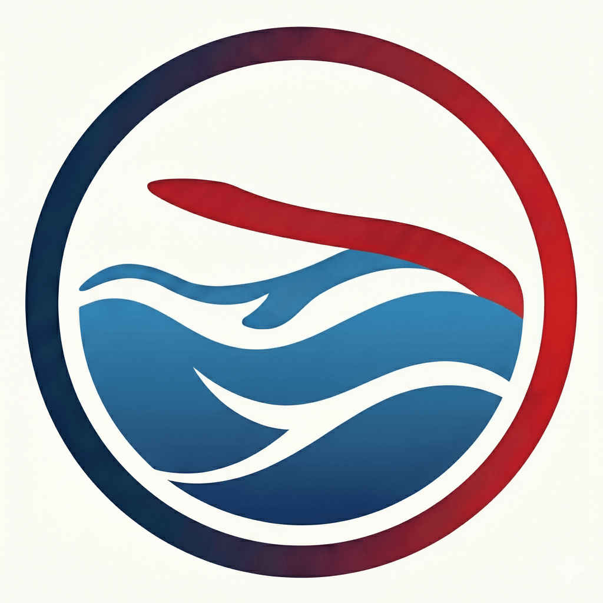
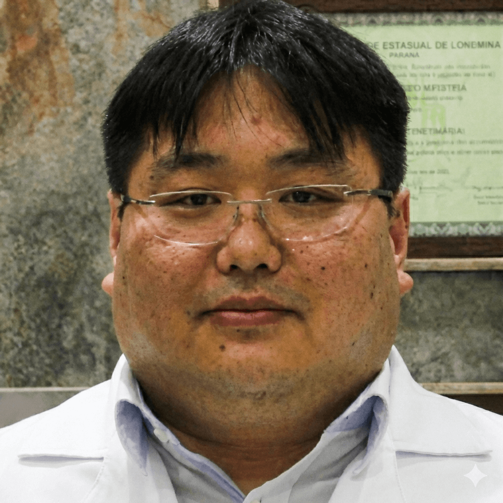

Dr. Mauricio Hiroshi Yamada
CRM-PR 21589
Cirurgia Vascular e Estética a Laser

Experiência e Qualificações
- Graduado em Medicina pela Universidade Estadual de Londrina (UEL).
- Residência Médica em Cirurgia Vascular e Cirurgia Geral pelo HSPE/SP.
- Especialista em Angiorradiologia e Cirurgia Endovascular pelo IAMSPE.
- Título de Especialista pela Sociedade Brasileira de Angiologia e de Cirurgia Vascular.
- Certificado de Atuação na Área de Ecografia Vascular com Doppler.